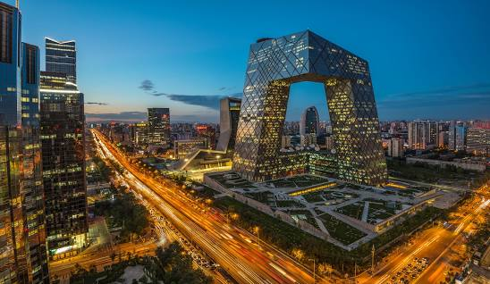
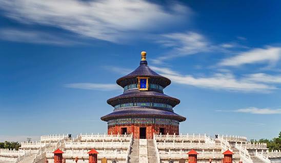
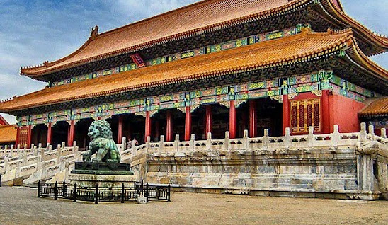
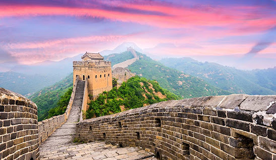
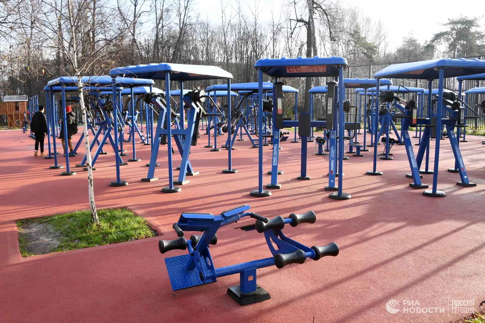
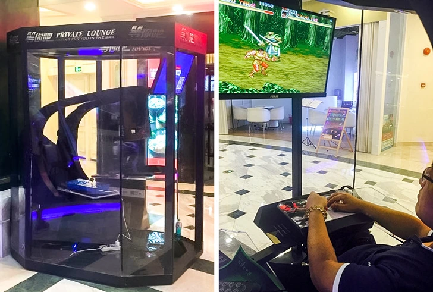
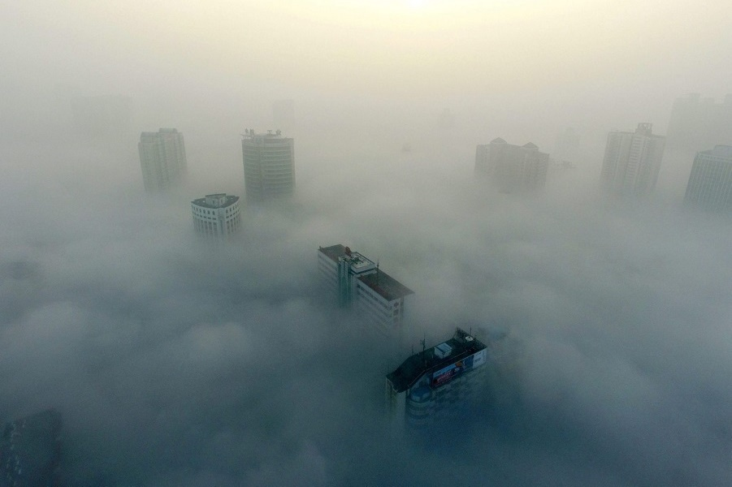

Pekin (chiń. 北京; pinyin Běijīng; Ikona głośnika [pèi.tɕíŋ] i) – stolica Chińskiej Republiki Ludowej oraz jedno z czterech miast wydzielonych, podlegające bezpośrednio władzom kraju. Od północy, zachodu i południa graniczy z prowincją Hebei, a od wschodu z miastem wydzielonym Tiencin.
Pekin jest drugim, po Szanghaju, miastem Chińskiej Republiki Ludowej pod względem liczby ludności. Miasto wydzielone o powierzchni 16 406 km² liczyło w 2020 roku ok. 21,8 mln mieszkańców[2][1].
Miasto pełni funkcję największego ośrodka politycznego, oświatowego i kulturalnego kraju. Wielki ośrodek gospodarczy z rozwiniętym przemysłem maszynowym, samochodowym, taboru kolejowego, elektronicznym, chemicznym, rafineryjnym, spożywczym, włókienniczym. Krzyżują się tu ważne linie kolejowe i drogi samochodowe. W mieście znajduje się ambasada RP.
Nazwa Běijīng znaczy dosłownie „Północna Stolica”. Stolice państw Azji Wschodniej często mają w swojej nazwie wyraz stolica. Przykładami mogą być: Nankin, dawna stolica Chin (znaczy Południowa Stolica), Tokio w Japonii oraz Tonkin (obecnie Hanoi) w Wietnamie (obydwie nazwy miast znaczą Wschodnia Stolica). Również dawna stolica Japonii, Kioto, oraz Hansŏng (kor. 한성; obecnie Seul) w Korei Południowej po przetłumaczeniu dadzą nazwę Stolica.
Nazwa Pekinu była wiele razy zmieniana. Między 1928 a 1949 rokiem miasto nazywało się Beiping (chiń. 北平; pinyin Běipíng), co oznaczało Północny Pokój.
Yanjing (chiń. 燕京; pinyin Yànjīng) to nieoficjalna nazwa miasta, używana podczas panowania dynastii Zhou. Obecnie tę nazwę nosi miejscowe piwo. Marco Polo w swoich relacjach nazwał Pekin z mongolska Cambaluc (pol. Chanbałyk).
Wzgórza dominują w północnej, północno-zachodniej i zachodniej części aglomeracji. Na północ od miasta ciągnie się pasmo Yan Shan, oddzielające Nizinę Chińską od południowej Mandżurii i Wyżyny Mongolskiej. Przez góry przechodzi kilka ważnych przełęczy: na płn.-zach. od Pekinu – Juyong (zob. Badaling), na płn.-wsch. – Gubei, i na wschód, nad morzem – Shanhai; szlaki z nich prowadzące zbiegają się w mieście, stanowiącym strategiczne skrzyżowanie dróg[4].
Zachodnią część miasta zajmują góry Jundu; wspólnie z Yan Shan tworzą półksiężyc, otwarty na południe i południowy wschód, na Nizinę Chińską, i w tej „zatoce” (zwanej przez geologów „Zatoką Pekinu”) usytuowane jest miasto. Leży ono o północnego wierzchołka ogromnego trójkąta Niziny Chińskiej, którego wschodnią krawędź wyznacza brzeg morski, zachodnią – góry Taihang Shan, a południowa jest otwarta na dolinę Huang He[4].
1. Chińskie dzieci rodzą się jako roczniaki
Kiedy rodzi się dziecko, ma już rok na koncie wschodnioazjatyckim. Wiek nie jest liczony od urodzin, ale od Nowego Roku (nie ma stałej daty, a według kalendarza księżycowego mieści się w przedziale od 21 stycznia do 21 lutego). Dlatego dzieci urodzone w odstępie kilku miesięcy na paszporcie mogą być w różnym wieku.
2. W każdym parku miejskim znajduje się boisko sportowe z bezpłatnymi fantazyjnymi maszynami do ćwiczeń

Według obcokrajowców o 4-5 rano na ulicach jest już pełno ludzi: ktoś uprawia gimnastykę, ktoś biegnie, skacze, gra w piłkę nożną, ale przede wszystkim ludzie na boiskach, na których są symulatory dla różnych grup mięśni.
3. Europejski wygląd zachwyca mieszkańców

W małych miastach Chińczycy są bardzo zaskoczeni i zadowoleni z pojawienia się obcokrajowców, nie ukrywając swoich emocji.
4. W centrach handlowych dużych miast zainstalowano "przechowalnie" dla mężów

Wewnątrz kabiny znajduje się wygodne krzesło, monitor i klawiatura do gier z joystickiem, a do dyspozycji są setki 8-bitowych gier. Podczas gdy żona robi zakupy, mąż może zdobyć jedzenie, napoje i zrelaksować się w przyjemnym otoczeniu. Również w Szanghaju można znaleźć podobne kabiny, tylko dla dwóch osób, a zamiast gier jest karaoke.
5. Chiny utonęły w smogu-to mit

Tak, duże miasta przemysłowe na wschodzie i północy kraju mają naprawdę złą ekologię, ale nie dotyczy to Zachodnich Chin, gdzie przez cały rok jest czyste niebo i czysta woda w rzekach. Chiński rząd aktywnie walczy z tym problemem, a zgodnie ze strategią rozwoju do 2035 r. Państwo środka wyjdzie z kryzysu ekologicznego.